POSTALES DE PUNTA TOMBO
La mayor colonia continental de pingüinos de Magallanes
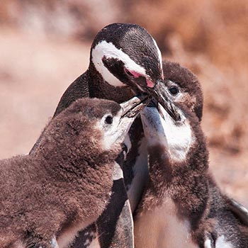
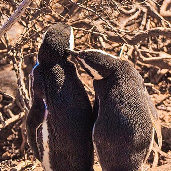
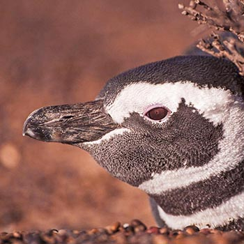
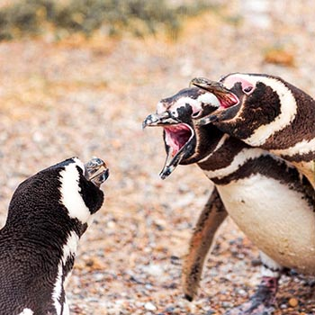
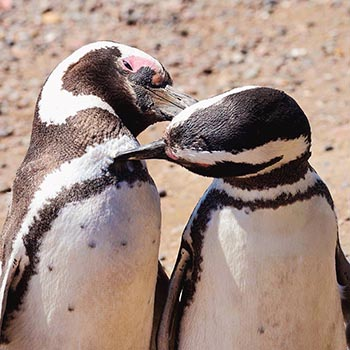
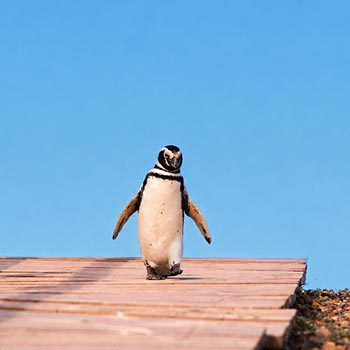
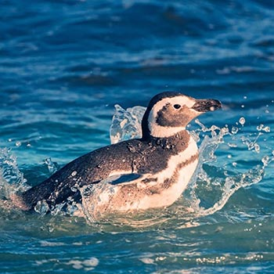
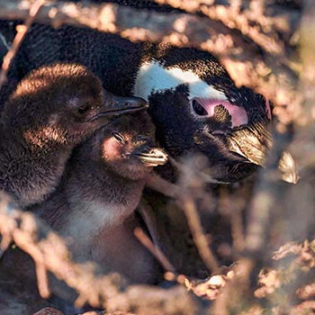
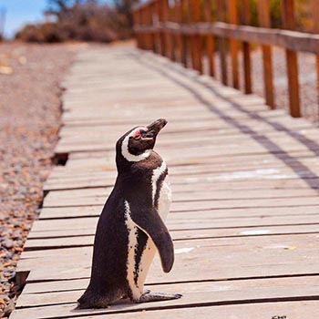
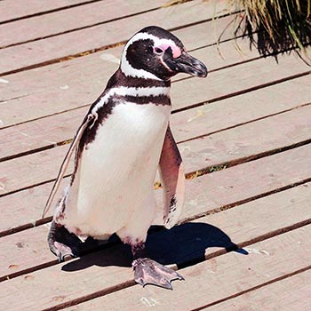
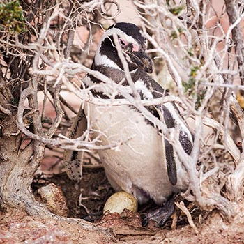
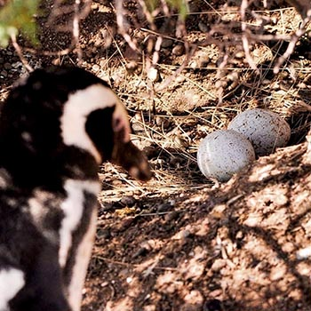
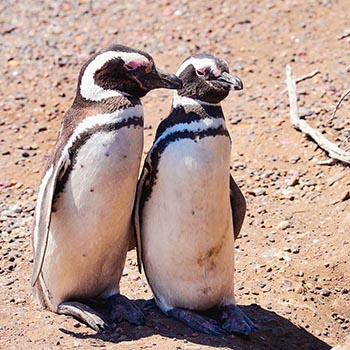
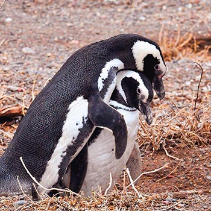
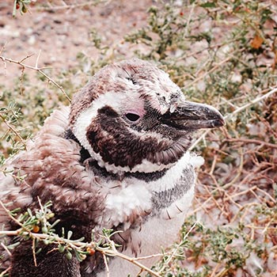
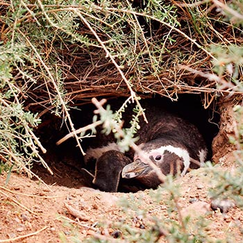

En invierno, Punta Tombo queda casi en pausa: sin pingüinos, el paisaje revela el lado más salvaje y solitario de la Patagonia.